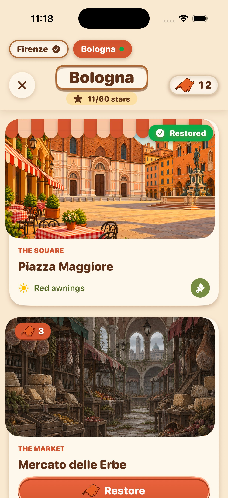
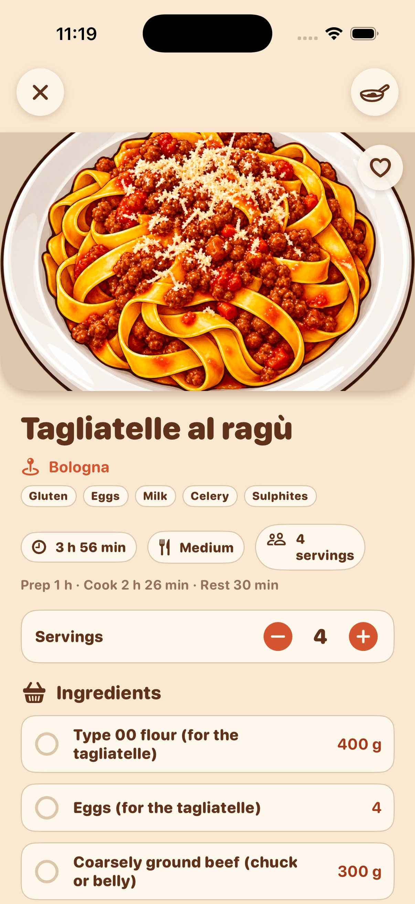
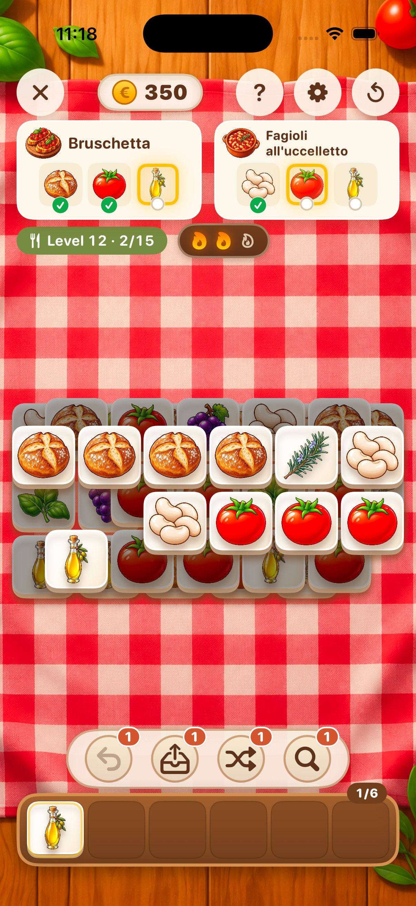

How Tavolata is made and how it grows, version after version. Written by its developer, in Italy.
Next stops: Aosta, Torino and Android
After Milano the journey heads to the Aosta Valley and Piedmont. The next cities are Aosta and Torino: levels, recipes and landmarks to restore are already in the works.
Around the same time Tavolata will also come to Android, where it is currently in testing.
Two smaller things are also in the works: a night landscape for the home screen and gentler notifications, at most one a day and never at night.

Milano, the first city with districts
Version 1.0.9 brings Milano, the sixth city of the journey. It is the first one divided into districts: Duomo, Brera, Navigli, Castello and Porta Nuova, with 100 new levels and 10 landmarks to restore.
Milanese dishes come to the table: risotto alla milanese, cotoletta, ossobuco with gremolada, cassoeula, minestrone alla milanese and mondeghili.
From Milano on, the cooking gets serious: each level allows only a few mistakes, and new "wrapped" tiles only open when an order asks for them.
The Passport changes too: it collects the stamps of every city (arrival, districts, restored landmarks) and leads through seven traveller ranks.
Tougher festivals and the Christmas Table
Playing the Trento Christmas market, we realised it was too easy. With version 1.0.8 every festival and every door of the Advent calendar is more challenging.
Festival wins now give Christmas roof tiles, used to restore "The Christmas Table", one piece a week.
The "At the table in Italy" habits grow from 12 to 60, and the Mission of the month starts in December.

A long Christmas, from Advent to the Befana
Version 1.0.7 brings the festivals: the Trento Christmas market and then a new festival every week until January 6, with traditional recipes, all the way to the Befana.
From December 1 to 24 there is also an Advent calendar, with a door to open every day.
In the days before, the chef started welcoming players when the game opens, with different lines for every city, and city postcards became shareable.

Why Tavolata
Tavolata started from a simple idea: a relaxing puzzle that also leaves you with something. A real recipe to cook, a place to discover, a word of Italian cooking.
In every level you match ingredients to complete orders: bread, tomato and olive oil make a bruschetta. Winning earns roof tiles to restore the landmarks of each city.
On November 11, 2026 Tavolata came out on the App Store. The journey starts in Firenze and will reach, one city after another, all 20 regions of Italy.